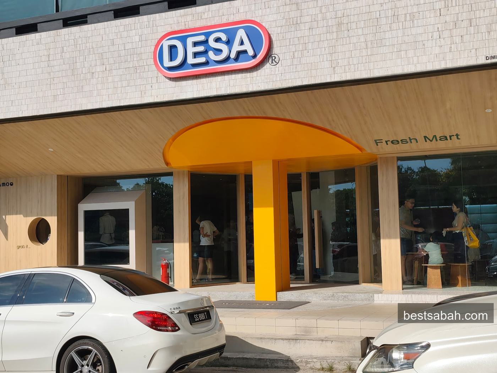
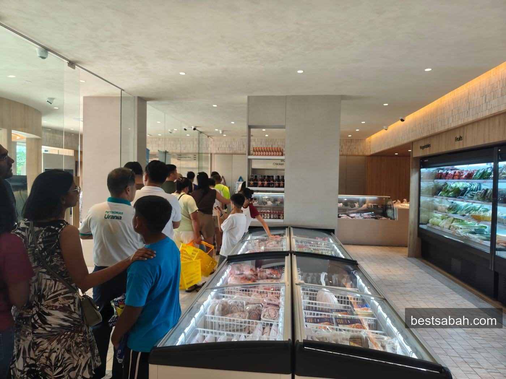
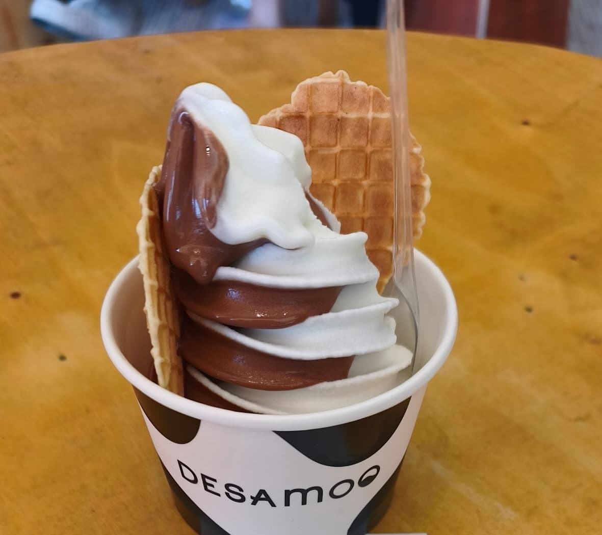
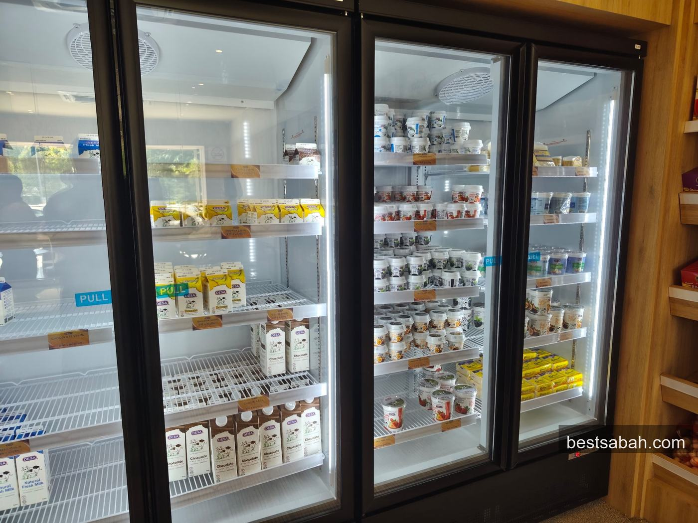

May 2026
DESA Ice Cream is Now in KK. No Kundasang Drive Required.
For years, DESA ice cream meant a 2-hour drive up to Kundasang. Now there's a proper DESA outlet right here in KK. At Damai Plaza, Luyang.

DESA Fresh Mart at Damai Plaza, Luyang. The DESAMOO ice cream counter is right inside.
DESA is Malaysia's only highland dairy brand. Their cows graze up in Kundasang at around 1,500m elevation, near the foot of Kinabalu. The milk is legit. And the ice cream made from that milk has always been worth the trip.
But now you don't need to make the trip. DESA opened a Fresh Mart here in KK, ground floor of Damai Plaza in Luyang. The ice cream counter inside is called DESAMOO.
That said, if a Kundasang trip is already on your Sabah itinerary, the original DESA farm up in the highlands is still worth a stop for the cows, the cool air, and the view of Kinabalu. Plenty of Kundasang tour packages build in a farm visit anyway. But for a quick fix down in the city, this DESAMOO counter does the job.

Wah. Long queue oh! If you haven't tried it yet, now's your chance!
The Ice Cream
It's soft serve, not scooped gelato. I got the Citrus Zen, chocolate and vanilla swirl with a waffle biscuit. RM 11.90. Creamy, smooth, and you can taste that the milk is good. A few other flavours on the menu too.

Citrus Zen. Chocolate and vanilla swirl, waffle biscuit on top. RM 11.90.
Not Into Ice Cream?
No problem. The Fresh Mart itself is worth a stop. Full DESA dairy range, fresh milk, flavoured milk, yogurts. Plus a butcher section, fresh produce, dry goods. Proper specialty mart.

Yes, it's worth it. You don't have to drive 2 hours to Kundasang anymore 😊 The ice cream is good, the milk quality shows. And even if you're not a gelato person, there's plenty of fresh products in the mart you might like.
Quick Info
Name: DESAMOO / DESA Fresh Mart
Address: Lot 26, Ground Floor, Damai Plaza, Luyang, 88300 Kota Kinabalu
Tel: 088-287231
Ice Cream Price: around RM 11.90 per cup
Google Maps: Get directions
While you're in Damai, Andrew Wong chicken rice is in the next block and very much worth a stop.